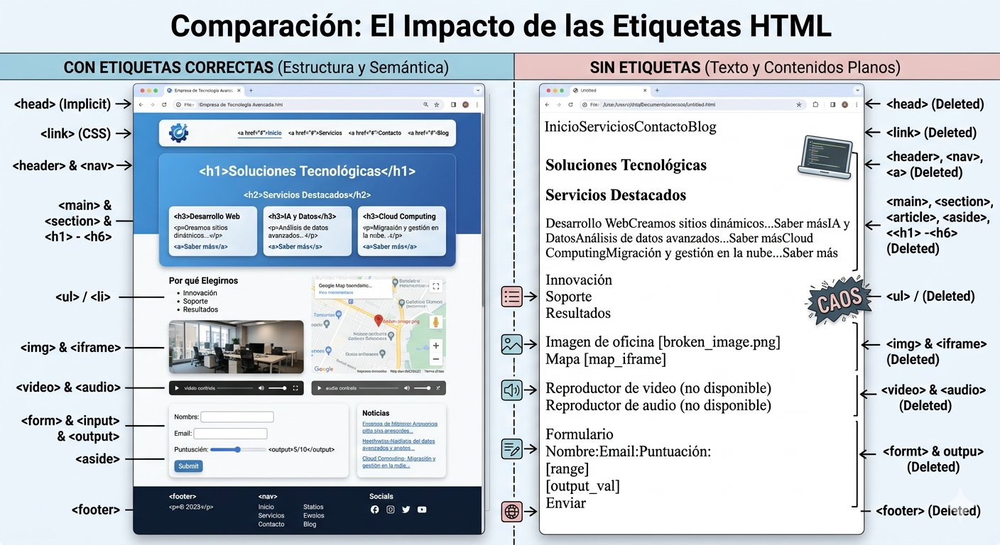

HTML
Es el componente más básico de la Web. Define el significado y la estructura del contenido web. Además de HTML, generalmente se utilizan otras tecnologías para describir la apariencia/presentación de una página web (CSS) o la funcionalidad/comportamiento (JavaScript).
Hipertexto
"Hipertexto" hace referencia a los enlaces que conectan páginas web entre sí, ya sea dentro de un único sitio web o entre sitios web. Los enlaces son un aspecto fundamental de la Web. Al subir contenido a Internet y vincularlo a las páginas creadas por otras personas, te conviertes en un participante activo en la «World Wide Web» (Red Informática Mundial).
Marcas y Etiquetas
HTML utiliza "marcas" para etiquetar texto, imágenes y otro contenido para mostrarlo en un navegador Web. Las marcas HTML incluyen "elementos" especiales como <head>, <title>, <body>, <header>, <footer>, <article>, <section>, <p>, <div>, <span>, <img>, <aside>, <audio>, <canvas>, <datalist>, <details>, <embed>, <nav>, <output>, <progress>, <video>, <ul>, <ol>, <li> y muchos otros.
Un elemento HTML se distingue de otro texto en un documento mediante "etiquetas", que consisten en el nombre del elemento rodeado por "<" y ">". El nombre de un elemento dentro de una etiqueta no distingue entre mayúsculas y minúsculas. Es decir, se puede escribir en mayúsculas, minúsculas o una mezcla. Por ejemplo, la etiqueta <title> se puede escribir como <Title>, <TITLE> o de cualquier otra forma.
Estructura Semántica (El Plano)
<!DOCTYPE html>
<html lang="es">
<head>
<title>Título de mi Página</title>
</head>
<body>
</body>
</html>
Diccionario de Etiquetas
Metadatos y Cabecera
<head>: El encabezado (donde suele ir el logo y el menú).
<link>: Se usa para enlazar recursos externos al documento HTML. El ejemplo más común son las hojas de estilos CSS.
<meta>: Etiqueta usada para definir otros metadatos que no se pueden definir con una etiqueta HTML específica.
<style>: Etiquetas usadas para introducir código CSS en línea, es decir, en el propio documento HTML.
Estructura y Secciones
<body>: Todo lo que quieras mostrar en la página web debe ir recogido dentro de estas etiquetas. Este contenido será el que se muestre en la web.
<nav>: Define la sección de navegación de la web.
<main>: Contenido principal del documento. Solo puede existir uno por documento.
<section>: Define una sección del documento.
<article>: Define contenido independiente de la web.
<aside>: Contenido adicional relacionado pero de poca importancia.
<h1> a <h6>: Usadas para jerarquizar el contenido de la web.
<header>: Define la cabecera (logo, menú, etc.).
<footer>: Define el pie de página.
<a>: Conecta páginas entre sí usando el atributo href.
<script>: Inserta código de JavaScript.
Agrupación y Multimedia
<p>: Párrafos de texto.
<ul>, <ol>, <li>: Creación de listas ordenadas y desordenadas.
<div>: Contenedor genérico.
<img>: Pintar una imagen.
<iframe>: Anidar otro documento HTML.
<video> y <audio>: Reproducción de archivos multimedia.
Formularios
<form>: Etiqueta de apertura y cierre de un formulario.
<output>: Muestra el resultado de un cálculo.
<input>: Campo de introducción de datos para el usuario.
¿Qué pasa si se borran?
1. El Cerebro Invisible: Metadatos
Si eliminas <head>, la página será un cascarón vacío de identidad. Sin <link>, tu web parecerá de los años 90 (texto plano). Sin <meta> viewport, se verá rota en móviles.
2. El Cuerpo y los Cimientos
Borrar <body> puede causar errores de renderizado masivos. Sin etiquetas semánticas (<nav>, <header>), la navegación para personas con discapacidad es imposible. Sin <a>, tu sitio es una isla aislada.
3. Orden y Multimedia
Sin <p>, el texto es una masa infinita. Sin <div>, el diseño (layout) se rompe totalmente. Borrar <img> o <video> deja la web muda y ciega.
4. Interacción
Sin <form>, los datos no se envían a ningún lado. Sin <input>, el usuario no puede escribir nada.
